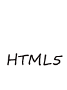
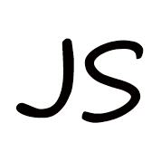
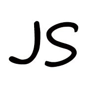
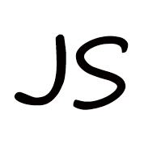

真与善之间，善比真重要
对待工作勤奋，认真负责，适应高强度工作压力
善于与人沟通，能在短时间内融入陌生环境，具有团队合作精神
自学能力及自我解决问题能力强，拥有敏锐的洞察力，喜欢分析问题，能够不断自我审视
能够耐心解决编写代码中遇到的问题，反复思考更优的编写代码技巧，以及网页优化方案
自我介绍：
- 您 好：我叫彭蒙善 | 党员
- 年 龄：29
- 职 业：web前端
- 工作地区：上海
- 工作经验：7年
- 学 历：本科
- 期望薪资：18K-25K
- 邮 箱：511470558@qq.com
- 个人评价：有丰富的前端开发经验，担任过微信小程序项目前端负责人



 




- 1、精通Div+Css页面布局，熟练使用Html5，Css3等新特性，制作响应式布局及其他各类布局；懂得相关互联网交互设计
- 2、熟悉使用JavaScript、AJAX、JSON、DOM、BOM，了解JS面向对象、组件开发、正则表达式、typeScript、 ES6语法
- 3、熟练使用JQuery、Zepto、Bootstrap、Swiper、Echarts、Element等第三方类库
- 4、精通Vue.js，熟悉React.js，Angular.js等前端主流框架，能使用MVVM、MVC构架模式以及使用webpack、Git、Svn等技术进行前端开发项目
- 5、熟悉微信公众号、小程序开发，掌握小程序原生开发及mpVue、Wepy、uniapp等主流小程序前端框架
- 6、了解模块化开发 CMD AMD 规范，以及Gulp、Less/Sass、 Require.js、 Sea.js等技术
- 7、掌握Koa2、Node.js等服务器语言，了解Java、PHP等后端语言，熟悉MongoDB、 MySQL等数据库，与后台开发工程师协作，能完成操作交互
- 8、能使用 canvas制作游戏，有自己的游戏项目
- 9、熟悉使用Photoshop、Visual studio code 、Sublime、Hbuilder、Firebug等开发软件
- 10、有解决问题、钻研新技术的兴趣和能力，具有良好团队合作精神，有高度的责任心，能够胜任一定压力的工作